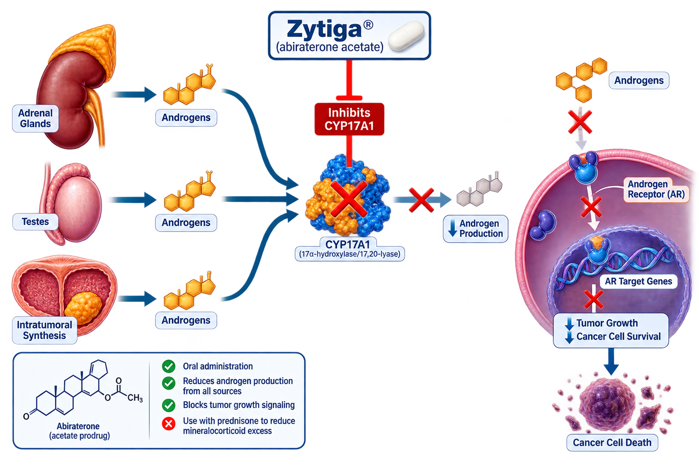

Janssen / Johnson & Johnson
Zytiga (abiraterone acetate) is an oral androgen biosynthesis inhibitor used in the treatment of advanced prostate cancer. It inhibits CYP17, a critical enzyme involved in androgen production, resulting in profound suppression of testosterone and other androgen levels.
Zytiga
Abiraterone Acetate
CYP17 Inhibitor
Oral
Janssen / Johnson & Johnson
Abiraterone acetate is converted in vivo to abiraterone, which inhibits CYP17A1, an enzyme required for androgen biosynthesis. CYP17 inhibition suppresses androgen production in the testes, adrenal glands, and prostate tumor tissue. This leads to profound reduction of androgen levels and decreases androgen receptor-driven prostate cancer growth.

| Trial | Setting | Outcome |
|---|---|---|
| COU-AA-301 | Metastatic CRPC | Improved Overall Survival vs Placebo |
| COU-AA-302 | Metastatic CRPC | Improved Overall Survival and Radiographic PFS |
| LATITUDE | High-Risk Metastatic CSPC | Improved Overall Survival and Radiographic PFS |
| STAMPEDE | Advanced Prostate Cancer | Improved Overall Survival |
Recommended dose: 1,000 mg orally once daily in combination with prednisone or prednisolone.
| Recommended Dose | 1,000 mg Once Daily |
|---|---|
| Route | Oral |
| Schedule | Continuous Treatment |
| Administration | Take on an Empty Stomach |